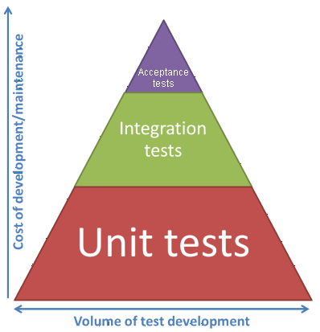
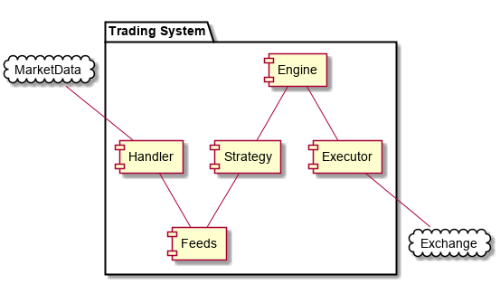
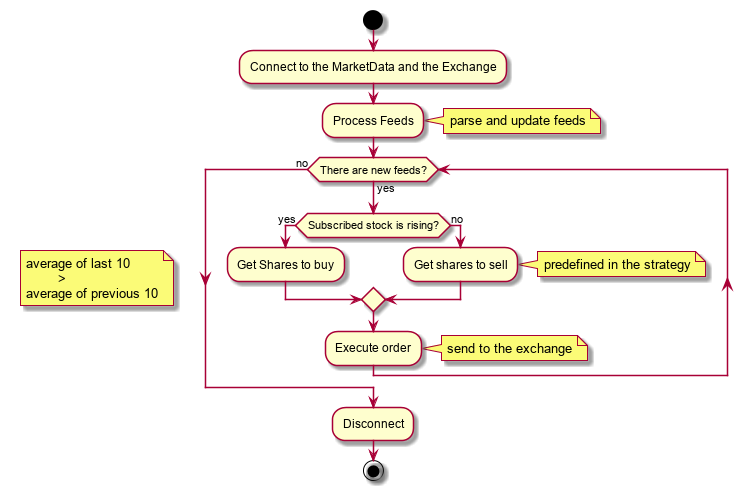
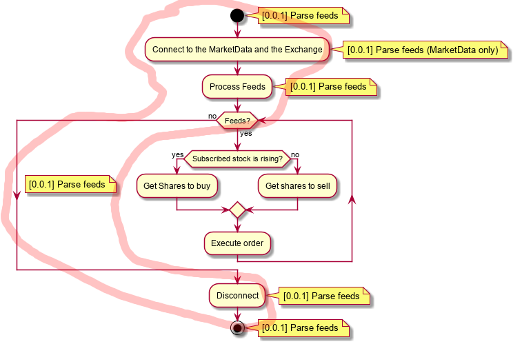

<!doctype html>

<html lang="en">

	<head>
		<meta charset="utf-8">

		<title>Towards Painless Testing</title>

		<meta name="description" content="Towards Painless Testing">
		<meta name="author" content="Kris Jusiak">

		<meta name="apple-mobile-web-app-capable" content="yes">
		<meta name="apple-mobile-web-app-status-bar-style" content="black-translucent">

		<meta name="viewport" content="width=device-width, initial-scale=1.0, maximum-scale=1.0, user-scalable=no, minimal-ui">

		<link rel="stylesheet" href="css/reveal.css">
    <link rel="stylesheet" href="css/theme/league.css" id="theme">

    <!-- Code syntax highlighting -->
    <link rel="stylesheet" href="lib/css/zenburn.css">

		<!-- Printing and PDF exports -->
		<script>
			var link = document.createElement( 'link' );
			link.rel = 'stylesheet';
			link.type = 'text/css';
			link.href = window.location.search.match( /print-pdf/gi ) ? 'css/print/pdf.css' : 'css/print/paper.css';
			document.getElementsByTagName( 'head' )[0].appendChild( link );
		</script>

		<!--[if lt IE 9]>
		<script src="lib/js/html5shiv.js"></script>
		<![endif]-->
	</head>

	<body>

		<div class="reveal">
			<div class="slides">

          <section data-markdown=""
                   data-separator="^====+$"
                   data-separator-vertical="^----+$"
                   data-notes="^Note:">
					<script type="text/template">
#### C++ Now 2017
# Towards Painless Testing

Kris Jusiak, Quantlab Financial

---

[kris@jusiak.net](mailto:kris@jusiak.net) | [@krisjusiak](https://twitter.com/krisjusiak) | [linkedin.com/in/kris-jusiak](https://www.linkedin.com/in/kris-jusiak)

==============================================================================

## "The only way to go fast is to go well" Uncle Bob

==============================================================================

## Agenda

* Testing
  * Why?
  * How And When?
    * Frameworks
    * Mocking
    * Writing A Testable Code
        * Single Responsibility Principle
        * Dependency Inversion
          * Automatic Mocks Injection
        * TDD/BDD
* Showcase (User Story -> ... -> Commit)
* C++2X...

==============================================================================

##Why testing is important?


----

##It's all about Money!


#### Finding bugs in production is REALLY expensive!

----

##First-Class Tests


<ul style="display: block">
    <li>Acceptance-Tests - 5-10%</li>
      Written by the business
      <hr />

    <li>Integration-Tests - 10-20%</li>
      Written by architects
      <hr />

    <li>Unit-Tests (70-85%)</li>
      Written by programmers
</ul>

----

##Cost per defect and First-Class Tests


----

### "Don't cling to a mistake just because you spent a lot of time and money making it!"

==============================================================================

### Testing - Goals

| | |
|-|-|
| Simplicity | Testing can't be hard |
| Expressiveness | Tests should express `what` and not `how` |
| Quality | Test code should be treated as `production code` |
| Performance | Testable code should not affect runtime performance |

> To achieve those goals...

==============================================================================

## Consider using a good* testing framework

####good*
* Easy to add and run new tests (automatic test registration)
* Proper assertions system (useful output / support for non-trivial comparisons)
* Feature reach (test suites/fixtures/different outputs)

----

### Testing in C++ without a framework

```cpp
#include <cassert> // no much testing facilities in the standard

void test_should_add_2_numbers() {
  assert(4 == add(2, 2)); // *no proper asserts
                          // *no nice outputs
}

int main() {
  test_should_add_2_numbers(); // *no automatic test registration
}
```

```sh
$CXX -g tests.cpp && ./a.out # *no way to specify which tests to run
```

----

### Solution -> C++ Testing Frameworks

#### <p align="left">Boost.Test</p>

```cpp
BOOST_AUTO_TEST_CASE(should_add_2_numbers) {
  BOOST_CHECK_EQUAL(4, add(2, 2));
}
```

#### <p align="left">Catch</p>

```cpp
TEST_CASE("Numbers can be added", "[add]") {
  SECTION("should add 2 numbers") { REQUIRE(4 == add(2, 2)); }
}
```

----

### Solution -> C++ Testing Frameworks

#### <p align="left">GoogleTest</p>

```cpp
TEST(AddTest, should_add_2_numbers) {
  EXPECT_EQ(4, add(2, 2));
}
```

#### <p align="left">GoogleTest/GUnit.GTest</p>

```cpp
GTEST("Can add numbers") {
  SHOULD("add 2 numbers") { EXPECT_EQ(4, add(2, 2)); }
}
```

#### <p align="left">GUnit.GTest-Lite (it will be used on the slides)</p>
```cpp
"should add 2 numbers"_test = [] { // -gnu-string-literal-
  EXPECT(4 == add(2, 2));          // -operator-template
};
```

----

### Testing-Frameworks references

| | |
|-|-|
| GUnit.GTest | https://github.com/cpp-testing/GUnit#GTest |
| GUnit.GTest-Lite | https://github.com/cpp-testing/GUnit#GTest-Lite |

==============================================================================

## Consider using a good* Mocking framework

####good*
* Has to be easier to use than hand written stubs/fakes!
* Limited boilerplate (especially macros)
* Useful error messages in case of unexpected calls
* Support for mocking Interfaces/Templates/Concepts/Type-Erasure

----

### Stubs vs Fakes vs Mocks

| | |
|-|-|
|Fake|An object with limited capabilities|
|Stubs|An object that provides predefined answers to method calls and record calls|
|Mocks|An object on which you set expectations which are verified by the mock|

---

https://martinfowler.com/articles/mocksArentStubs.html

----

###Mocking interfaces - the story so far - GoogleMock

```cpp
class IReader {
public:
  virtual ~interface() = default;
  virtual int read() const;
};
```

```cpp
/**
 * Boilerplate
 */
class MockReader : public IReader {
public:
  MOCK_CONST_METHOD1(read, int()); // See the bug?
};
```

```cpp
"should read 42"_test = [] {
  MockReader reader{};
  EXPECT_CALL(reader, read()).WillOnce(Return(42));
  EXPECT(42 == reader.read(42));
};
```

----

###Mocking interfaces - modern alternatives

* HippoMocks
* FakeIt
* ...
* **GUnit.GMock (based on GoogleMock)**

----

### Mocking Interfaces - GUnit.GMock

```cpp
"should read 42"_test = [] {
  GMock<IReader> reader{}; // no hand written macros (no boilerplate)
                           // Not a standard solution
                           //   (vtable manipulation involved)

  EXPECT_CALL(reader, read).WillOnce(Return(42));

  EXPECT(42 == reader.read());
};
```

----

### Mocking Interfaces - GUnit.GMock - How?

```cpp
template <class T>
class GMock { // no inheritance
 static_assert(is_complete<T>{} && is_polymorphic<T>{} &&
               has_virtual_destructor<T>{});

 detail::vtable<T> vtable{};
 detail::byte _[sizeof(T)]{};

public:
 template <class TName, class R, class B, class... TArgs>
 decltype(auto) call_(R (B::*f)(TArgs...), Matcher<TArgs>&&... args);

private:
 flat_map<string, unique_ptr<UntypedFunctionMockerBase>> fs{};
};
```

----

### Mocking Interfaces - GUnit.GMock - How?

#### Vtable
```cpp
/**
 * Itanium C++ ABI - https://mentorembedded.github.io/cxx-abi/abi.html
 * @tparam T interface type
 */
template <class T>
class vtable {
 public:
  vtable(void *f, void *dtor);
  ~vtable();
  void set(std::size_t offset, void *f);

 private:
  void **vptr{};
}
```

#### Usage
```cpp
#define EXPECT_CALL(obj, call)
  ((obj).template call_<#call>().
    InternalExpectedAt(__FILE__, __LINE__, #obj, #call)
```

----

### Mocking templates - GUnit.GMock

#### We are back to square one -> macros

```cpp
template<class TReader>
auto read(TReader& reader) { return reader.read(); }
```

```cpp
class MockReader { // no inheritance
public:
  MOCK_CONST_METHOD1(read, int());
};
```

```cpp
"should read 42"_test = [] {
  MockReader reader{};

  // At least we can use the same front-end
  EXPECT_CALL(reader, read).WillOnce(Return(42));

  read(reader);

  EXPECT(42 == reader.read);
};
```

----

### Mocking concepts - GUnit.GMock

#### Concepts lite - not yet :(

```cpp
template <class T>
concept bool Readable =
  CopyConstructible<T> &&
  CopyAssignable<T> &&
  requires(T t) {
    { t.read() -> int }
  }
};
```

#### But with concept emulation (C++14) - yes!

```cpp
template <class T>
const auto Readable =
  CopyConstructible<T> &&
  CopyAssignable<T> &&
  Callable<T, int()>($(read)); // expose read for mocking!
```

----

### Mocking concepts - GUnit.GMock

#### Virtual Concepts

| Functionality | Description |
|-|-|
| Constraint checking | Like Concepts-Lite |
| Type-Erasure | Like Boost.TypeErasure |
| Mocking | Like GoogleMock just for concepts |

https://github.com/boost-experimental/vc

----

### Mocking concepts - GUnit.GMock

```cpp
"should read 42"_test = [] {
  GMock<Readable> reader{}; // concept based!

  EXPECT_CALL(reader, read).WillOnce(Return(42));

  EXPECT(42 == reader.read());
};
```
#### Exactly the same as with interfaces!

----

### Mocking concepts - GUnit.GMock - How?

```cpp
Callable<T, int()>($(read)) ]--> Constraint
          \_  \_____   \___-> name
            \       \
$(name) [](auto t, auto r, auto... args) { // expression
 struct { // inherit from
  static auto constraint() {
   return [](const auto &self, decltype(args)... args)
     -> decltype(self.name(args...)){};
  }
  auto name(decltype(args)... args) {
   return static_cast<decltype(t) *>(this) // static polymorphism
     ->template call_<name, typename decltype(r)::type>(args...);
  }
 } _; return _; // local struct
}
```

```cpp
template<class... TConstraints>
class gmock_impl : decltype(std::declval<TConstraints::expression>()(
                             TConstraints::args...))... (
public:
 gmock_impl() = default;

 template <class TName, class R, class... TArgs>
 decltype(auto) call_(TArgs &&... args); // calls mocked impl...
};
```

----

### Type-erasure (dynamic dispatch without inheritance)

```cpp
class FileReader { // no inheritance
public:
  explicit FileReader(std::string_view);
  int read();
};

class StreamReader { // no inheritance
public:
  int read();
};
```

#### Any - can store anything which satisfies the concept
```cpp
any<Readable> reader = FileReader{"file.txt"};
reader = StreamReader{};
```

----

### Mocking type-erasure

```cpp
"should read 42"_test = [] {
  GMock<Readable> reader{}; // concept based

  EXPECT_CALL(reader, read).WillOnce(Return(42));

  EXPECT(42 == reader.read());
};
```
#### Exactly the same as with interfaces and concepts!

----

### Mocking type-erasure - How?

```cpp
template <class TConcept, class... Ts>
class any_impl : decltype(std::declval<TConstraints::expression>()(
                             TConstraints::args...))... (
public:
  template <class T>
  any_impl(T t) : poly_{
    t, dyno::make_concept_map(Ts::name{} = Ts::expr()...)
  } {}

  template <class TName, class R, class... TArgs>
  auto call_(TArgs&&... args) {
    return poly_.virtual_(TName{})(poly_, args...);
  }

private:
  dyno::poly<Tconcept> poly_{};
};
```
https://github.com/ldionne/dyno

----

### Mocking references

| | |
|-|-|
| GoogleMock | https://github.com/google/googletest |
| GUnit.GMock | https://github.com/cpp-testing/GUnit#GMock |
<!-- .element: style="margin-left:-13%; width:125%" -->
  * Features
    * No more hand written mocks!
    * Support for more than 10 parameters
    * Support for std::unique_ptr without any tricks
    * Support for overloaded operators
    * Support for mocking classes with constructors
    * 100% Compatible with Google Mocks
    * Quicker compilation times
==============================================================================

### Consider writing `SOLID` instead of `STUPID` code

<table><tr>
 <td>
  <table>
    <tr><td><b>S</b></td><td><u>Single Responsibility</u></td></tr>
    <tr><td><b>O</b></td><td>Open-close</td></tr>
    <tr><td><b>L</b></td><td>Liskov substitution</td></tr>
    <tr><td><b>I</b></td><td>Interface segregation</td></tr>
    <tr><td><b>D</b></td><td><u>Dependency inversion</u></td></tr>
  </table>
 </td>

 <td>
  <table>
    <tr><td><b>S</b></td><td><strike>Singleton</strike></td></tr>
    <tr><td><b>T</b></td><td><strike>Tight Coupling</strike></td></tr>
    <tr><td><b>U</b></td><td><strike>Untestability</strike></td></tr>
    <tr><td><b>P</b></td><td><strike>Premature Optimization</strike></td></tr>
    <tr><td><b>I</b></td><td><strike>Indescriptive Naming</strike></td></tr>
    <tr><td><b>D</b></td><td><strike>Duplication</strike></td></tr>
  </table>
 </td>

 </tr>
</table>
> "Clean Code" Uncle Bob

----

### Feature: Print a value from a file

#### KISS - ~~Keep it simple~~, STUPID

```cpp
int main() {
  auto value = 0;
  {
    std::ifstream file{"input.txt"};
    assert(file.good());
    file >> value;
  }
  std::cout << value << '\n';
}
```

##### Unit-Testing? - Give me a break!

----

### A few iterations later...

----

#### Stupid vs <strike>SOLID</strike>

```cpp
class Manager { // Indescriptive Naming (God object)
public:
  Updater& getUpdater(); // Untestability
  Reader& getReader();   // Untestability
  Writer& getWriter();   // Untestability
  Creator& getCreator(); // Untestability
  void update(float);
};
```

```cpp
class App {
public:
  App()
    : manager(std::make_unique<Manager>()); // Tight Coupling
  { }

  __attribute__((always_inline)) void run() { // Premature Optimization
    Logger::instance() // Singleton
      << "run:" << manager.getReader().get()->getValue() << '\n';

    manager.getWriter().getOutputter()->print(
      manager.getReader().get()->getValue() // Duplication
    )
  }
private:
  std::unique_ptr<Manager> manager;
};
```

----

### App - Unit-testing?

```cpp
"should print read value"_test = [] {
  // given
  App app{};

  // when
  app.run();

  // then
  // Ideas? How to fake manager? #define private public?
};
```

#### We can only do Integration-testing or black box testing here!

----

### A few iterations later...
####(after some SOLID courses)

----

### Single Responsibility

```cpp
/**
 * "A class should have only one reason to change" Uncle Bob
 */
class Reader {        class Printer {
 public:               public:
   int read();           void print(int);
};                    };
```

----

### Dependency Inversion

```cpp
/**
 * Dependency Inversion
 *   "Depend on abstractions, not on concretions"
 */
class IReader {                     class IPrinter {
public:                             public:
  virtual ~IReader() = default;       virtual ~IPrinter() = default;
  virtual int read() = 0;             virtual void print(int);
};                                  };
```

```cpp
class Reader final                  class Printer final
 : public IReader {                   : public IPrinter {
public:                             public:
  int read() override;                void print(int) override;
};                                  };
```

----

### <strike>Stupid</strike> vs SOLID

```cpp
class App {
public:
  /**
   * Dependency Injection
   *   "Don't call us, we'll call you", Hollywood principle
   */
  App(IReader& reader, IPrinter& printer, ILogger& logger);

  void run() {
    const auto value = reader.read();
    Logger << "run:" << value << '\n';
    printer.print(value); // Law of Demeter
                          // "Only talk to your immediate friends"
  }
private:
  IReader& reader; IPrinter& printer; ILogger& logger;
};
```

----

### App - Unit-testing - Simple!

```cpp
"should print read value"_test = [] {
  // Some boilerplate introduced!
  NiceGMock<ILogger> logger{};      // Ignore an uninteresting call
  StrictGMock<IReader> reader{};    // Fail on uninteresting call
  StrictGMock<IPrinter> printer{};  // Fail on uninteresting call
  App app{reader, printer, logger}; // Wiring!

  EXPECT_CALL(reader, read).WillOnce(Return(42));
  EXPECT_CALL(printer, print, 42);

  app.run();
};
```

----

### It works but, all in all, it's a <u>Java</u> approach

* Heap
* Reference/Pointer semantics
* Inheritance
  * "Inheritance Is The Base Class of Evil" Sean Parent
* Dynamic Dispatch
* ~Performance
  * final keyword and devirtualization - https://godbolt.org/g/e8olYN

----

### C++ ain't java - Zero overhead abstractions, please!


### Templates/Concepts

----

### App - Concepts

```cpp
template <class T>                  template <class T>
const auto Readable =               const auto Printable =
  CopyConstructible<T> &&             CopyConstructible<T> &&
  CopyAssignable<T> &&                CopyAssignable<T> &&
  Callable<T, int()>($(read));        Callable<T, void(int)>($(print));
```

```cpp
// template<Readable TReader, Printable TPrinter> // Concepts-Lite
template<class TReader, class TPrinter, class TLogger>
class App {
  static_assert(Readable<TReader>() &&
                Printable<TPrinter>() &&
                Loggable<TLogger>());

public:
  App(TReader reader, TPrinter printer, TLogger logger);

  void run() {
    printer.print(reader.read());
  }

private:
  TReader reader; TPrinter printer; TLogger logger;
};
```

----

### App - Unit-Testing - Concepts

```cpp
"should print read value"_test = [] {
  NiceGMock<Loggable> logger{};      // Ignore an uninteresting call
  StrictGMock<Readable> reader{};    // Fail on uninteresting call
  StrictGMock<Printable> printer{};  // Fail on uninteresting call
  App app{reader, printer, logger};  // C++17 template argument
                                     // deduction for class templates

  EXPECT_CALL(reader, read).WillOnce(Return(42));
  EXPECT_CALL(printer, print, 42);

  app.run();
};
```
#### Pretty much the same as for interfaces!

----

### App - Type-Erasure - Virtual Concepts (Dynamic Dispatch without inheritance)

```cpp
class App {
public:
  App(any<Readable> reader
    , any<Printable> printer
    , any<Loggable> logger);

  void run() {
    printer.print(reader.read());
  }

private:
  any<Readable> reader;   // `virtual Readable` with virtual concepts!
  any<Printable> printer; // `virtual Readable` with virtual concepts!
  any<Loggable> logger;   // `virtual Readable` with virtual concepts!
};
```

----

### App - Unit-Testing -  Type-Erasure
```cpp
"should print read value"_test = [] {
  NiceGMock<Loggable> logger{};      // Ignore an uninteresting call
  StrictGMock<Readable> reader{};    // Fail on uninteresting call
  StrictGMock<Printable> printer{};  // Fail on uninteresting call
  App app{reader, printer, logger};  // C++17 template argument
                                     // deduction for class templates

  EXPECT_CALL(reader, read).WillOnce(Return(42));
  EXPECT_CALL(printer, print, 42);

  app.run();
};
```
#### The same test as with concepts!

----

### So far so good, but are there any problems with `SOLID` approach?

----

### Wiring Mess

> `SOLID` allows testable design but it moves the problem to the caller!

#### Test
```cpp
"should print read value"_test = [] {
  NiceGMock<Loggable> logger{};      // WIRING!
  StrictGMock<Readable> reader{};    // WIRING!
  StrictGMock<Printable> printer{};  // WIRING!
  App app{reader, printer, logger};  // WIRING!
};
```

#### Composition root - Unique location where  modules are composed together
```cpp
int main() {
  auto file = std::fstream{"input.txt"};               // WIRING!
  auto reader = std::make_unique<FileReader>(file);    // WIRING!
  auto printer = std::make_shared<Printer>(std::cout); // WIRING!
  App app{reader, printer};                            // WIRING!
}
```

----

### Factories can fix it, right?

```cpp
class ReaderFactory {
  static auto create(std::string_view file) {
    return std::make_unique<FileReader>(file);
  }
};
```

#### Usage
```cpp
class App {
public:
  // Carry dependencies which doesn't use
  explicit App(std::string_view file)
    : reader{ReaderFactory::create(file)} // Tight coupling again!
  { }

  void run();

private:
  Reader reader{};
};
```

```cpp
int main() {
  App app{"file.txt"}; // short and sweat !/?
  ...
}
```

----

### ReaderFactory - Unit-Testing
```cpp
"should create a file reader"_test = [] {
  ReaderFactory factory{};
  auto reader = factory.create("test_file.txt");

  EXPECT(reader.get()); // Is that enough?
  EXPECT("test_file.txt", ...) // How to test what was passed?
};
```

#### Static factories MUST go! (Abstract factories are okay-ish)

----

###SOLID - Produces testable code and better design

####BUT

* ####Single Responsibility Principle
  =>
    * ####A lot of classes
    =>
      * ####Wiring Mess
      =>
        * ####Hard to maintain + Lazy programmers (99%)
        =>
          * ####Hacks/Workarounds (~~Single Responsibility~~)

-----

###Solution

####Simplify/Remove the wiring mess
  ####By Automating dependency injection?
=>
### [[Boost].DI](https://github.com/boost-experimental/di)

==============================================================================

## Consider using dependency injection framework to avoid the wiring mess and inject mocks automatically

----

###[[Boost].DI](https://github.com/boost-experimental/di) - Dependency Injection Framework

```cpp
#include <boost/di.hpp>
namespace di = boost::di;
```

```cpp
template<class TReader = Readable, class TSize = class Size>
class App {                                               ^
 public:                                                  |
  App(const TReader&, std::unique_ptr<IPrinter>, config); |
};           ^                            ^          ^    |
             |                            \-------\  |    |
             \--------------------------------\   |  |    |
int main() {                                  |   |  |    |
  const auto injector = di::make_injector(    |   |  |    |
     di::bind<Readable>.to<FileReader>(),   --/   |  |    |
     di::bind<IPrinter>.to<ConsolePrinter>(), ----/  |    |
     config{"127.0.0.1", 8080}, ---------------------/    |
     di::bind<class Size>.to<int_<42>>() -----------------/
  );
  injector.create<App>().run(); // or di::make<App>(...).run();
}
```

----

### How is that helping with the Wiring Mess?

----

###[[Boost].DI](https://github.com/boost-experimental/di) - Automatic Injection

#####Manual DI - Wiring mess

```cpp
int main() {
  auto reader = Reader{};          // WIRING!
  auto printer = Printer{};        // WIRING!
  auto app = App{reader, printer}; // WIRING!
  app.run();
}
```

#####[Boost].DI

```cpp
int main() {
  di::make_injector().create<App>().run();
}
```
  * [Boost].DI will also boost your performance
    * No run-time overhead (wiring at compile time)
    * Cache friendly object layout (whole graph is known at compile time)

----

###[[Boost].DI](https://github.com/boost-experimental/di) - Refactoring for free!

####Let's change `App` constructor

######Before

```cpp
App(Reader& reader, Printer& printer)
  : reader(reader))
  , printer(printer)
{ }
```

######After

```cpp
App(Printer& printer, std::unique_ptr<Reader> reader)
 : printer(printer)
 , reader(std::move(reader))
{}
```

----

###[[Boost].DI](https://github.com/boost-experimental/di) - Refactoring for free!

#####Manual DI - Wiring mess

```cpp
int main() {
  auto reader = std::make_unique<Reader>{};   // DIFF Wiring!
  auto printer = Printer{};                   // Wiring
  auto app = App{printer, std::move(reader)}; // DIFF Wiring!
  app.run();
}
```

#####[Boost].DI - No changes!

```cpp
int main() {
  di::make_injector().create<App>().run(); // same as before!
}
```

----

### [[Boost].DI](https://github.com/boost-experimental/di) - Integration testing for free!

#### Production
```cpp
const auto config = [] {
  return di::make_injector(
    di::bind<Readable>.to<FileReader>(),
    di::bind<Printable>.to<ConsolePrinter>(),
    di::bind<Loggable>.to<StreamLogger>(),
    ...
  );
};
int main() {
  di::make<App>(config)().run();
}
```

#### integration-testing
```cpp
"should"_test = [] {
  auto app = di::make<App>(config,
    di::bind<Loggable>.to<FakeLogger>() [di::override]
  );

  app.run(); // only fake logger will be used!

  ...
};
```

----

### [[Boost].DI](https://github.com/boost-experimental/di)/GUnit.GMock - Automatic Mocks Injection

#### Let's get rid off some boilerplate!
```cpp
NiceGMock<Loggable> logger{};      // WIRING!
StrictGMock<Readable> reader{};    // WIRING!
StrictGMock<Printable> printer{};  // WIRING!
```

----

###Test - Manual mocks injection

```cpp
"should print read value"_test = [] {
  GMock<Readable> reader{};                       // Boilerplate
  GMock<Printable> printer{};                     // Boilerplate
  App<Readable, Printable> app{reader, printer};  // Boilerplate

  EXPECT_CALL(reader, read).WillOnce(Return(42));
  EXPECT_CALL(printer, print, 42);

  app.run();
};
```

###Test - Automatic mocks injection
```cpp
"should print read text"_test = [] {
  auto [app, mocks] = testing::make<App>();

  EXPECT_CALL(mocks<Readable)>(), read).WillOnce(Return(42));
  EXPECT_CALL(mocks<Readable>(), print, 42);

  app.run();
};
```

----

### Let's change the App a bit

####Test - Manual mocks injection (LOC changed: 5/6, LOC added: 1)

```cpp
"should print read value"_test = [] {
  auto reader = std::make_shared<GMock<Readable>>(); // DIFF!
  auto printer = std::make_unique<GMock<Printable>>(); // DIFF!
  auto printer_ptr = printer.get(); // HACK!
  App<Printable, Readable> app{reader, std::move(printer)}; // DIFF!

  EXPECT_CALL(*reader, read).WillOnce(Return(42)); // Dereference!
  EXPECT_CALL(*printer_ptr, print, 42); // HACK!

  app.run();
};
```

####Test - Automatic mocks injection (LOC changed: 0/6, LOC added: 0)
```cpp
"should print read text"_test = [] {
  auto [app, mocks] = testing::make<App>(); // SAME OLD, SAME OLD!

  EXPECT_CALL(mocks<Readable)>(), read).WillOnce(Return(42));
  EXPECT_CALL(mocks<Readable>(), print, 42);

  app.run();
};
```

----

###Automatic mocks injection - How?

```cpp
template<class TArgs, class TMocks>
struct mocker {
  const TArgs& args;
  TMocks& mocks;

  template<class T> requires std::is_polymorphic<raw_t<T>>{}
  operator T() const {
    return mocks.add<T>(); // create a new GMock<T>
  }

  template<class T> requires !std::is_polymorphic<raw_t<T>>{}
  operator T() const {
    return args.get<T>(); // get the arg
  }
};
```

```cpp
template <class T, class... TMocks>
auto make(TArgs &&... args) {
  std::tuple<TArgs...> args{args...};
  mocks_t mocks{};

  return std::pair{
    T{mocker{args, mocks}...} // depends on sizeof of
  , mocks_t                   // is_constructible<T, mocker...>
  };
}

```

----

### Okay, that's fancy, but how it can be used to produce a testable code by default?

### Solution -> Test Driven Development

==============================================================================

## Consider writing tests before the implementation

| | | |
|-|-|-|
| TDD | Test Driven Development | Unit Tests |
| BDD | Behaviour Test Driven Development | Unit/Integration Tests |

----

##TDD Mantra - Red-Green-Refactor


> Refactor => remove duplicates!

----

##The Three Rules Of Tdd

1. You are not allowed to write any production code unless it is to make a failing unit test pass
2. You are not allowed to write any more of a unit test than is sufficient to fail
  * Compilation failures are failures
3. You are not allowed to write any more production code than is sufficient to pass the one failing unit test

----

##Test Driven Development (TDD)

* All benefits of Unit-Testing!

* TDD drives the design by producing
  * Loosely coupled code (no globals/singletons)
  * Easy to test code (no god objects)

* No need for the test coverage <- it implies 100%

----

## Behaviour Driven Development (BDD)

#### Language

```cpp
"[TDD] add numbers"_test = [] { "[BDD} should add 2 numbers" = [] {
  EXPECT_CALL(sum, add(2, 2)).    GIVEN(sum, add(2, 2)).
    WillOnce(Return(4));          WillOnce(Return(4));
  c.add(2, 2);                    WHEN(calc.add(2, 2));
  EXPECT(count == 4);             THEN(count).should_be(4);
};                              };
```


#### Scope
| | Test |
|-|-|
| TDD | Locked Implementation |
| BDD | Locked Behaviour |

----

## BDD (Given/When/Then) - Example

[Gherkin/Cucumber](https://github.com/cucumber/cucumber-cpp)

```cpp
Feature: File Viewer

Scenario 1: Value from a file is displayed
 Given I have a file with a 42 value in it
   And the App is created
 When The App runs
 Then The 42 should be printed
```


```
```

----

### BDD - Gherkin/Cucumber (Integration Testing)

```cpp
GIVEN("^I have a file with a (\\d+) in it$") {
  REGEX_PARAM(int, n);
  ScenarioScope<AppCtx> context{};
  context->app.push(n);
}
```

```cpp
GIVEN("^The App is created$") {
  ScenarioScope<AppCtx> context{};
  std::cout.rdbuf(context->app.buffer.rdbuf()); // redirect cout
  context->app = di::make<App>(production_wiring);
}
```

```cpp
WHEN("^The App runs") {
  ScenarioScope<AppCtx> context{};
  context->app.run();
}
```

```cpp
THEN("^The (\\d+) should be printed") {
  REGEX_PARAM(int, expected);
  ScenarioScope<AppCtx> context{};
  specify(context->buffer, should.equal(expected));
}
```

----

## BDD - DI/Mocking (Unit Testing)

```cpp
"[scenario] Value from a file is displayed"_test {
  auto [app, mocks] = testing::make<App>()

  GIVEN(mocks<Readable>(), read().WillOnce(Return(42));

  WHEN(app.run());

  THEN(mocks<Printable>(), print(42));
}
```

----

## Behaviour Driven Development

* Complementary with TDD!
* Focus on customer needs (behaviours)

==============================================================================

## Showcase (User Story -> ... -> Commit)


----

### Tools

| |  |
|-|-|
| Methodology | Agile (Scrum) |
| Design      | UML 2.5 |
| Development | BDD/TDD/eXtreme Programming |
| Delivery    | Continuous Integration |

----

### Product backlog refinement

| | | |
|-|-|-|
| Priority | Story | Description |
| 1.       | Automated Trading System | A trading system should trade stocks automatically |
| 2.       | ... | ... |


----

### Product backlog refinement - Acceptance criteria (BDD)

```
Feature: Automated Trading System
```

```
Scenario 1: Trading System requests to buy shares
  Given The Trading System is up and running
    And The TS has at least $100'000 to buy shares

  When at least 1000 shares of GOOGL were bought at price $950

  Then A buy order for 100 shares of GOOGL should've be executed
   And The TS should own 100 shares of GOOGL
   And The TS should have $90'000
```

```
Scenario 2: Trading System requests to sell shares
  Given The Trading System is up and running
    And The TS owns 100 shares of APPL stock

  When 50 shares of MSFT were sold

  Then A sell order for 50 shares of MSFT stock should've been executed
   And The TS should own 50 shares of APPL stock
```

```
Scenario 3: ...
Scenario 4: ...
...
```

----

### If we use Cucumber we already have Acceptance Tests!
> Acceptance Tests are written by the business for the purpose of ensuring that the production code does what the business expects it to do

----

### Design/Workshop - Domains/Components



----

### Design/Workshop - Activities

---



----

### Stories -> Tasks (cross functional)



----

### Stories -> Tasks

#### Priority order

[0.0.1] Parse feeds (deliverable)
  * Connect to the MarketData
  * Process feeds
  * There are feeds? -> no
  * Disconnect

[0.0.2] Handle buy (deliverable)

[0.0.3] Handle sell (deliverable)

----

### Planning (Team velocity ~5 Story Points)

  * [0.0.1] Parse feeds (3SP) <- COMMIT
  * [0.0.2] Handle buy  (8SP)
  * [0.0.3] Handle sell (2SP)

----

### Sprint - Let's do it!

| | | |
|-|-|-|
| TODO                  | WIP                     | DONE |
|                       | [0.0.1] Parse Feeds     |      |
| [0.0.2] Handle Buy    |                         |      |
| [0.0.3] Handle Sell   |                         |      |

----

### BDD/RED - Write a bit of test

```cpp
"[0.0.1] Parse feeds [should connect on start]"_test = [] {
  GIVEN("A trading system",
    auto [ts, mocks] = testing::make<trading_system>()
  );

  WHEN("TS is started", ts.start() );

  THEN(mocks<Streamable(class MarketData)>(), connect());
};
```

----

### BDD/GREEN - Make it compile/pass (The simplest way)

```cpp
template<class TMarketData = Streamable(class MarketData)>
class trading_system {
public:
  explicit trading_system(TMarketData& marketData) {
    : marketData(marketData) {
    marketData.connect();
  }

  void process() {}

private:
  TMarketData& marketData;
};
```

----

### BDD/RED - Write a bit more test

```cpp
"[0.0.1] Parse feeds [empty stream of feeds]"_test = [] {
  GIVEN("A trading system",
    auto [ts, mocks] = testing::make<trading_system>());
  WHEN("TS is started", ts.start() );
  THEN(mocks<Streamable(class MarketData)>(), connect());

  GIVEN(mocks<Streamable(class MarketData)>(), read()).
    WillOnce(Return(""));
  WHEN("TS is processed", ts.process());
  THEN(mocks<Streamable(class MarketData)>(), disconnect());
};
```

----

### BDD/GREEN - Make it pass again...

```cpp
template<...>
class trading_system {
public:
  ...
  void process() {
    if (auto buffer = marketData.read(); buffer.empty()) {
      marketData.disconnect();
    }
  }
};
```

----

### BDD/REFACTOR - with TDD

----

#### 1. TDD/RED - Write a bit of test (expectations/intentions)

```cpp
"should connect to the stream on creation"_test = [] {
  auto [fh, mocks] = testing::make<feed_handler()>(mocks);
  EXPECT_CALL(mocks<Streamable>(), connect);
  fh(); // create feed_handler
};
```

----

#### 2. TDD/GREEN - Make it compile/pass (the simpler way)

```cpp
template<class TStream = Streamable>
class feed_handler {
public:
  explicit feed_handler(TStream& stream) {
    stream.connect();
  }
};
```

----

## TDD and eXtreme programming / Pairing


> 1. One dev is writing a test and the other is making it pass (the simplest way)
> 2. Switch the roles!

----

#### 1. TDD/RED - Write another test

```cpp
"should disconnect when read an empty stream"_test = [] {
  auto [fh, mocks] = testing::make<feed_handler()>();

  InSequence sequence;
  EXPECT_CALL(mocks<Streamable>(), connect());
  EXPECT_CALL(mocks<Streamable>(), read()).WillOnce(Return(""));
  EXPECT_CALL(mocks<Streamable>(), disconnect());

  EXPECT(not fh().process());
};
```

----

#### 2. TDD/GREEN - Make all tests pass

```cpp
template<class TStream = Streamable>
class feed_handler {
public:
  explicit feed_handler(TStream& stream) {
    stream.connect();
  }

  auto process() {
    if (auto buffer = stream.read(); buffer.empty()) {
      stream.disconnect();
      return false;
    }
    return true;
  }

private:
  TStream& stream;
};
```

----

### Commit

```
[0.0.1] :new: Parse feeds - Ability to parse feeds from MarketData

Problem:
- Trading system has to connect to the market data
- Trading system is required to subscribe for market
  data feeds in order to receive data to make decisions
- Trading system has to disconnect from the market data

Solution:
- Connect to the market data on startup of the trading system
- Implement feed handler which can parse feeds from the market data
- Disconnect from the market data when there is no more feeds
```

```
Content
  Cross functional delivarable with all tests
```

----

### Merge request/Code Review

-----

#### 2. TDD/GREEN - Make it compile/pass (the simpler way)
#### 3. TDD/REFECTOR - Remove duplicates/extract

----


* #### Take the next story...
* #### Pair with someone else of the team! (knowledge sharing)

==============================================================================

## Testing and C++ 2X
<table>

</table>

----

### Automatic test registration and std::testing assertions

```cpp
"should add 2 numbers"_test = [] {
  std::testing::assert(4 == add(2, 2));
};
```

----

### Test Suites/Fixtures

```cpp
"Calculator"_test_fixture = [] {
  // set-up
  auto sut = calcualtor{};

  "should add 2 numbers"_test = [&] {
    std::testing::assert(4 == sut.add(2, 2));
  };

  "should sub 2 numbers"_test = [&] {
    std::testing::assert(0 == sut.sub(2, 2));
  };

  // tear-down
};
```

----

### Proposals

| | |
|-|-|
| Mocks Generation | [(SG7) Static reflection](www.open-std.org/jtc1/sc22/wg21/docs/papers/2016/p0194r0.pdf) |
| Type constraints | [(SG8) Concepts lite](http://www.open-std.org/jtc1/sc22/wg21/docs/papers/2013/n3580.pdf) |
| Concepts based type erasure | [Virtual Concepts](https://github.com/andyprowl/virtual-concepts/blob/master/draft/Dynamic%20Generic%20Programming%20with%20Virtual%20Concepts.pdf) |

==============================================================================

## Summary

----

### Good practises are good practices for a reason!

* Consider using a good* testing framework
* Consider using a good* Mocking framework
* Consider writing `SOLID` instead of `STUPID` code
* Consider using dependency injection framework
* Consider writing tests before the implementation

----

###Last but not least...

----

### "If you liked it then you should have put a test on it" Beyonce rule

==============================================================================

## Questions?

| | |
|-|-|
| GUnit     | https://github.com/cpp-testing/GUnit |
| VC        | https://github.com/boost-experimental/vc |
|[Boost].DI | https://github.com/boost-experimental/di |

---

[kris@jusiak.net](mailto:kris@jusiak.net) | [@krisjusiak](https://twitter.com/krisjusiak) | [linkedin.com/in/kris-jusiak](https://www.linkedin.com/in/kris-jusiak)

					</script>
				</section>

			</div>
		</div>

		<script src="lib/js/head.min.js"></script>
		<script src="js/reveal.js"></script>

		<script>

			// Full list of configuration options available at:
			// https://github.com/hakimel/reveal.js#configuration
			Reveal.initialize({

        // Display controls in the bottom right corner
        controls: true,

        // Display a presentation progress bar
        progress: true,

        // Display the page number of the current slide
        slideNumber: true,

        // Push each slide change to the browser history
        history: true,

        // Enable keyboard shortcuts for navigation
        keyboard: true,

        // Enable the slide overview mode
        overview: true,

        // Vertical centering of slides
        center: true,

        // Enables touch navigation on devices with touch input
        touch: true,

        // Loop the presentation
        loop: false,

        // Change the presentation direction to be RTL
        rtl: false,

        // Turns fragments on and off globally
        fragments: false,

        // Flags if the presentation is running in an embedded mode,
        // i.e. contained within a limited portion of the screen
        embedded: false,

        // Flags if we should show a help overlay when the questionmark
        // key is pressed
        help: true,

        // Flags if speaker notes should be visible to all viewers
        showNotes: false,

        // Number of milliseconds between automatically proceeding to the
        // next slide, disabled when set to 0, this value can be overwritten
        // by using a data-autoslide attribute on your slides
        autoSlide: 0,

        // Stop auto-sliding after user input
        autoSlideStoppable: true,

        // Enable slide navigation via mouse wheel
        mouseWheel: true,

        // Hides the address bar on mobile devices
        hideAddressBar: true,

        // Opens links in an iframe preview overlay
        previewLinks: false,

        // Transition style
        transition: 'convex', // none/fade/slide/convex/concave/zoom

        // Transition speed
        transitionSpeed: 'default', // default/fast/slow

        // Transition style for full page slide backgrounds
        backgroundTransition: 'default', // none/fade/slide/convex/concave/zoom

        // Number of slides away from the current that are visible
        viewDistance: 3,

        // Parallax background image
        parallaxBackgroundImage: '', // e.g. "'https://s3.amazonaws.com/hakim-static/reveal-js/reveal-parallax-1.jpg'"

        // Parallax background size
        parallaxBackgroundSize: '', // CSS syntax, e.g. "2100px 900px"

        // Number of pixels to move the parallax background per slide
        // - Calculated automatically unless specified
        // - Set to 0 to disable movement along an axis
        parallaxBackgroundHorizontal: null,
        parallaxBackgroundVertical: null,

				// Optional reveal.js plugins
				dependencies: [
					{ src: 'lib/js/classList.js', condition: function() { return !document.body.classList; } },
					{ src: 'plugin/markdown/marked.js', condition: function() { return !!document.querySelector( '[data-markdown]' ); } },
					{ src: 'plugin/markdown/markdown.js', condition: function() { return !!document.querySelector( '[data-markdown]' ); } },
					{ src: 'plugin/highlight/highlight.js', async: true, callback: function() { hljs.initHighlightingOnLoad(); } },
					{ src: 'plugin/zoom-js/zoom.js', async: true },
					{ src: 'plugin/notes/notes.js', async: true }
				]
			});

		</script>

	</body>
</html>
